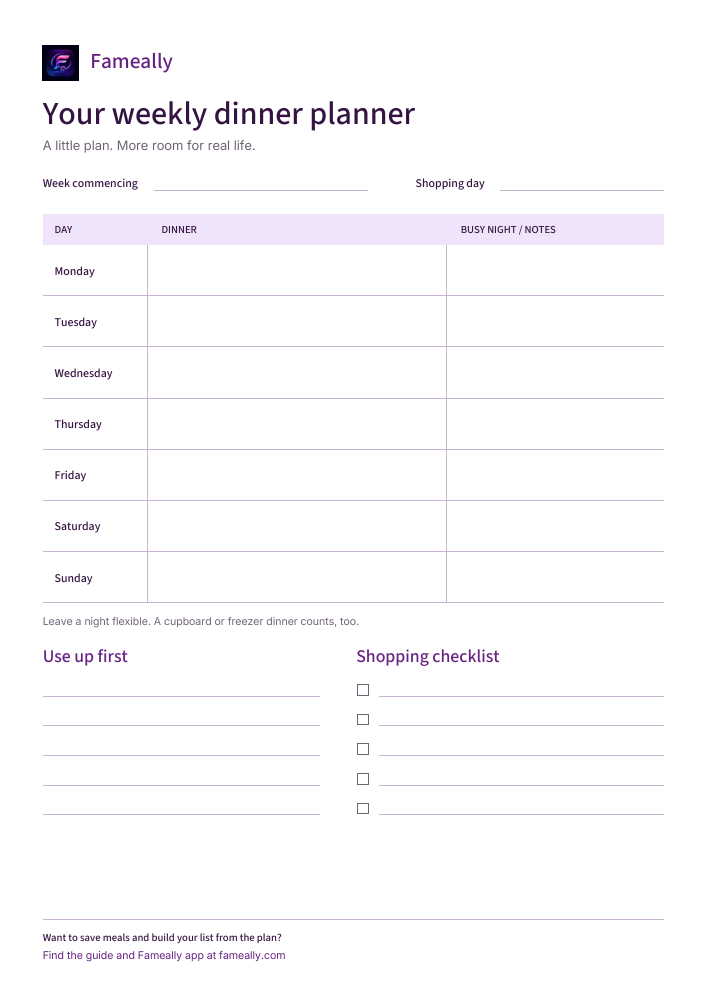

A printable weekly meal planner works well when you want dinner written somewhere everyone can see. A meal planning app becomes useful when you’re copying ingredients, rebuilding the same weeks, or sending someone the latest shopping list. The right family meal planner is the one that makes those jobs easier. Here’s how to choose, plus a free planner to try before your next food shop.

One page. Your next week.
Seven dinner spaces, notes for busy nights, a “use up first” list, and shopping checkboxes. Leave it on the fridge or bring it to the table while you plan.
Download free plannerA4 PDF · one page · no email or signup
Paper or app: the practical differences
Picture Thursday evening. The dinner plan has changed, someone else is shopping, and you’re trying to remember whether there’s rice at home. That’s a more useful test than how tidy either planner looks on Sunday.
| The weekly job | Printable planner | Meal planning app |
|---|---|---|
| Seeing dinner | Visible on the fridge without a device. | Available on your phone; others need access. |
| Changing plans | Cross out or rewrite a meal. | Edit the plan; check how shopping changes are handled. |
| Making the list | Write ingredients and combine duplicates yourself. | Some apps build lists from saved meal ingredients. |
| Sharing updates | Read the sheet or send a fresh photo. | Shared features can keep everyone on the same plan. |
| Reusing a week | Keep old sheets and copy what worked. | Saved meals and reusable plans can reduce retyping. |
| Cost and setup | This PDF is free; printing uses paper and ink. | Features, setup, and subscription costs vary. |
Apps differ, so check the features you need before choosing. Our guide to what to look for in a family meal planning app covers that decision in more detail.
When a printable planner is enough
Paper is a good starting point if one person usually plans and shops, your dinners are familiar, and you mostly need a reminder. There’s nothing to learn: write “jacket potatoes and beans” against Tuesday, add the missing ingredients, and carry on. Children can see the plan without needing their own device or account.
It can also help when you prefer discussing dinner away from a screen. Put the sheet on the table, ask everyone for a meal they’d enjoy, and notice the evenings when cooking time is short. A simple dinner plan is enough; you don’t have to schedule every snack.
The trade-off is keeping copies current. If you photograph the list on Monday and someone adds washing-up liquid on Tuesday, the photo won’t change. Agree where additions go and take a fresh picture before shopping. If that feels manageable, paper may be all you need.
When an app earns its place
An app starts to help when the same small jobs keep coming back. Perhaps you write the ingredients for your regular chilli every week. Perhaps both of you buy milk because you’re shopping from different lists. Or perhaps last week’s plan worked, but finding and copying it takes longer than starting again.
A meal planner with shopping list features can connect the dinner decision to what needs buying. Save the meal and its ingredients once, put it into a plan, then use those ingredients to build the list. You’ll still need to check the cupboards and account for things the app hasn’t been told about.
Sharing matters when more than one person cooks or shops. Look for access to the same meals, plans, and list, rather than assuming every app includes it. Our shared family meal planning guide explains how to make that routine work.
Keep your regular meals ready for next week.
Fameally saves meals, plans the week, and builds shopping lists from meal ingredients. Explore the app and choose the plan that fits your household.
Try it for one ordinary week
You don’t need a new collection of recipes to test a planner. Use dinners you already make and a week with its usual late finishes and changing plans.
- Check the week and the cupboards. Notice who’s home, which nights are busy, and what you already have. Write down food you intend to use first before choosing more meals.
- Choose five dinners and leave some room. Keep two evenings flexible for a cupboard meal, a freezer option, or a change of plans. For a worked example, see our seven-day family meal plan.
- Build one shopping list. Check the ingredients for each dinner, combine what overlaps, and leave off what’s already at home. Remember breakfasts, lunches, and household extras. Here’s how to turn the plan into a shopping list.
- Make changes where everyone expects them. Update the sheet or the shared app when dinner moves. At the end of the week, ask what you had to rewrite, remember, or send to someone else.
Those steps work with either tool. Less Waste’s meal planning guidance also recommends checking what you have, considering your calendar, and building in flexibility. The habit matters as much as the format.
Can you use paper and an app together?
Yes. You might keep the week’s dinners on the fridge while using an app for saved meals and shopping. The paper gives everyone a quick view; the phone goes to the supermarket. Choose which version holds the current plan, and update the fridge copy when it changes.
This works best when the paper is a summary. If you’re maintaining two detailed ingredient lists, you’ve created more work. Keep the shopping list in one place and use the other format only where it helps.
Where Fameally fits
Fameally brings saved meals, weekly planning, and shopping lists together. Ingredients from planned meals build your list, with matching ingredients added together. You can keep food and household items organised, too.

Reusable weekly plans and one-tap weekly essentials are available with Individual and Family. Household sharing requires Family: the owner can invite up to five people by email to share meals, plans, and shopping lists. Check the current plans and pricing for the details.
Start with three dinners you already cook. Add their ingredients, place them in your week, and build the list. That small test will tell you more about whether Fameally helps than filling every day straight away.
A few common questions
- Is the printable weekly meal planner free?
- Yes. Download the A4 PDF without an email address or account. It has dinner spaces, notes, and a shopping checklist. Print a fresh copy whenever you need one.
- Does a meal planning app replace checking the fridge?
- No. An ingredient list tells you what a meal needs, not necessarily what’s in your kitchen. Check supplies before shopping, whichever planner you use.
- Do I need to plan all seven dinners?
- No. Start with the evenings you know about and leave room for change. A useful plan can have blank spaces.
- Is Fameally’s shared household access included in every plan?
- No. Shared access is a Family feature. Core covers the essentials; Individual adds more planning tools. Compare the plans before choosing.
Make the next food shop a little easier.
Save a few familiar meals in Fameally and try building your next shopping list from the plan.
Know someone planning the food shop?
Send them this guide. If you run a family or community resource page, you’re welcome to link to the free planner section and credit Fameally.